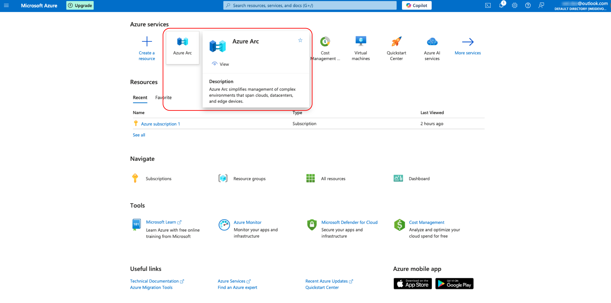

Deploying Resource Group using CI/CD with Terraform and Github Action
Step 01 | Setting up Service Princple
In order to let GitHub Workflow and Terraform to work with Azure Resource Management, the CLIENT_ID, CLIENT_SECRET_VALUE, TENANT_ID and SUBSCRIPTION_ID will have to be assigned in the workflow files. Therefore, setting up a Service Principle with a AZ Subscription assigned is the first step of the RG creation. The 2 methods I know of setting up the Service Principle is through EntraID App Registration & Azure Arc. I have tried the EntraID App registration with an Azure Enterprise Tenant and tried the Azure Arc with my personal Azure free account. Here I am demonstrating the later method:
1. Finding Azure Arc
Go to Azure Portal and find Azure Arc in the Azure services catalogue.
2. Adding a Service Principle
After entering the Azure Arc page, navigate to Service Principle option under Management tab in the left Pane of the portal page. Click the “+Add” option.

3. Configuring The New Service Principle
After the Add New Azure Arc Service Principle (a.k.a SPN) comes up, filling the name of the SPN you like. Choosing Subscription for the scope assignment level as we are trying to create a Resource Group (RG), therefore we don’t have any resource group we would like to use yet. For the expiry date, I chose 3 months time for general reason.

4. Finding the Credential Values
After creating the SPN, you will then have the CLIENT_ID, CLIENT_SECRET_VALUE, TENANT_ID(Manually creating one by clicking into the Client Credentials if Secret Value creation is not included in the SPN configuration process.)

5. Finding the Subscription ID
For the Subscription, it will be found at the Subscription management page.


Step 02 | Hiding the Azure User Credential in Github Secret
1. Hiding the SPN Values on GitHub
Go to the repository where I am storing my terrafrom and workflow files and have the 4 variables I need for interacting with Azure assigned as Secrets for Github Actions.


2. Setting Up Automation workflow
Configuring the workflow file for triggering GitHub Action.
workflows.yml
name: 'Terraform'
on:
push:
branches: [ "main" ]
pull_request:
workflow_dispatch:
permissions:
contents: read
env:
ARM_CLIENT_ID: ${{ secrets.AZURE_CLIENT_ID }}
ARM_CLIENT_SECRET: ${{ secrets.AZURE_CLIENT_SECRET_VALUE }}
ARM_SUBSCRIPTION_ID: ${{ secrets.AZURE_SUBSCRIPTION_ID }}
ARM_TENANT_ID: ${{ secrets.AZURE_TENANT_ID }}
jobs:
terraform:
name: 'Terraform'
runs-on: ubuntu-latest
environment: testing
# Use the Bash shell regardless whether the GitHub Actions runner is ubuntu-latest, macos-latest, or windows-latest
defaults:
run:
shell: bash
steps:
# Checkout the repository to the GitHub Actions runner
- name: Checkout
uses: actions/checkout@v4
# Install the latest version of Terraform CLI and configure the Terraform CLI configuration file with a Terraform Cloud user API token
- name: Setup Terraform
uses: hashicorp/setup-terraform@v3
# Initialize a new or existing Terraform working directory by creating initial files, loading any remote state, downloading modules, etc.
- name: Terraform Init
run: terraform init
#Azure Environment Variables
- name: Set Azure credentials
run: |
echo "AZURE_CREDENTIALS={ \"clientId\": \"${{ secrets.AZURE_CLIENT_ID }}\", \"clientSecret\": \"${{ secrets.AZURE_CLIENT_SECRET_VALUE }}\", \"subscriptionId\": \"${{ secrets.AZURE_SUBSCRIPTION_ID }}\", \"tenantId\": \"${{ secrets.AZURE_TENANT_ID }}\" }" >> $GITHUB_ENV
- name: Azure Login
uses: azure/login@v1
with:
creds: ${{ env.AZURE_CREDENTIALS }}
# Checks that all Terraform configuration files adhere to a canonical format
- name: Terraform Format
run: terraform fmt
# Generates an execution plan for Terraform
- name: Terraform Plan
run: terraform plan -input=false
# On push to "main", build or change infrastructure according to Terraform configuration files
# Note: It is recommended to set up a required "strict" status check in your repository for "Terraform Cloud". See the documentation on "strict" required status checks for more information: https://help.github.com/en/github/administering-a-repository/types-of-required-status-checks
- name: Terraform Apply
run: terraform apply -auto-approve -input=false
Step 03 | Preparing Terraform files for Deploying Resource Group
1. Configuring the main terraform file
main.tf
# Create a Resource Group (if it doesn’t exist)
resource "azurerm_resource_group" "wcdev_tf_rg" {
name = "weichudev_terraform_RG"
location = "UK South"
}
2. Configuring the terraform provider file
provider.tf
provider "azurerm" {
features {}
resource_provider_registrations = "none"
}
# Set the Azure Provider source and version being used
terraform {
required_version = ">= 0.14"
required_providers {
azurerm = {
source = "hashicorp/azurerm"
version = ">= 3.0.0"
}
}
}
Step 04 | Run the GitHub Workflow
Commit & Sync the changes to the repository, the workflow will then be triggered.


troubleshoot Notes
Issue 01 | Wrong Authentication Configuration
In order to let GitHub Workflow and Terraform to work with Azure Resource Management, the CLIENT_ID, CLIENT_SECRET_VALUE, TENANT_ID and SUBSCRIPTION_ID will have to be assigned in the workflow files. Therefore, setting up a Service Principle with a AZ Subscription assigned is the first step of the RG creation. The 2 methods I know of setting up the Service Principle is through EntraID App Registration & Azure Arc. I have tried the EntraID App registration with an Azure Enterprise Tenant and tried the Azure Arc with my personal Azure free account. Here I am demonstrating the later method:
Error message from GitHub Action
Go to Azure Portal and find Azure Arc in the Azure services catalogue.

Solving Process
Go to Azure Portal and find Azure Arc in the Azure services catalogue.


Issue 02 | Wrong Authentication Configuration
In order to let GitHub Workflow and Terraform to work with Azure Resource Management, the CLIENT_ID, CLIENT_SECRET_VALUE, TENANT_ID and SUBSCRIPTION_ID will have to be assigned in the workflow files. Therefore, setting up a Service Principle with a AZ Subscription assigned is the first step of the RG creation. The 2 methods I know of setting up the Service Principle is through EntraID App Registration & Azure Arc. I have tried the EntraID App registration with an Azure Enterprise Tenant and tried the Azure Arc with my personal Azure free account. Here I am demonstrating the later method:
Error message from GitHub Action
Go to Azure Portal and find Azure Arc in the Azure services catalogue.


Solving Process
Go to Azure Portal and find Azure Arc in the Azure services catalogue.
provider.tf
provider "azurerm" {
features {}
resource_provider_registrations = "none"
}
# Set the Azure Provider source and version being used
terraform {
required_version = ">= 0.14"
required_providers {
azurerm = {
source = "hashicorp/azurerm"
version = ">= 3.0.0"
}
}
}
Issue 03 | Wrong Authentication Configuration
In order to let GitHub Workflow and Terraform to work with Azure Resource Management, the CLIENT_ID, CLIENT_SECRET_VALUE, TENANT_ID and SUBSCRIPTION_ID will have to be assigned in the workflow files. Therefore, setting up a Service Principle with a AZ Subscription assigned is the first step of the RG creation. The 2 methods I know of setting up the Service Principle is through EntraID App Registration & Azure Arc. I have tried the EntraID App registration with an Azure Enterprise Tenant and tried the Azure Arc with my personal Azure free account. Here I am demonstrating the later method:
Error message from GitHub Action
Go to Azure Portal and find Azure Arc in the Azure services catalogue.